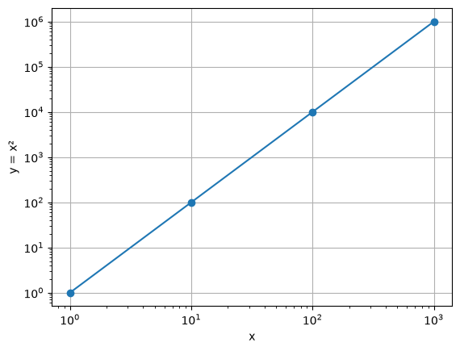
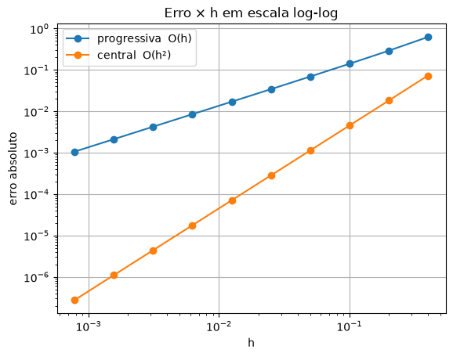
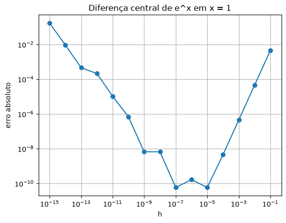

2. Diferenças finitas¶
A derivada responde a uma pergunta que aparece em todo lugar: com que rapidez uma coisa está mudando? A tensão num indutor depende da rapidez com que a corrente muda. Uma colônia de bactérias tem uma velocidade de crescimento. O custo de uma fábrica tem uma taxa de aumento a cada peça extra. No cálculo, você aprendeu a derivar com regras: a do produto, a da cadeia. O computador não usa nenhuma delas. Ele usa a definição da derivada, com um \(h\) pequeno mas não nulo, e faz uma conta de subtração e divisão.
Este capítulo mostra de onde vêm essas contas, por que uma é melhor que a outra e por que, surpreendentemente, um \(h\) pequeno demais piora o resultado.
A derivada como limite¶
A definição que você viu no cálculo é
A fração é a inclinação da reta secante que passa por \((x, f(x))\) e \((x+h, f(x+h))\). Quando \(h\) encolhe, a secante gira e se aproxima da reta tangente, cuja inclinação é a derivada. O computador não sabe fazer o limite. Ele simplesmente para num \(h\) pequeno e aceita o erro:
# A derivada como limite: a inclinacao da secante vira a da tangente
# quando h encolhe. f(x) = x**2 tem derivada exata f'(2) = 4.
def f(x):
return x**2
x = 2
for h in [1, 0.1, 0.01, 0.001]:
inclinacao = (f(x + h) - f(x)) / h
print(f"h = {h:6.3f} inclinacao = {inclinacao:.6f}")
h = 1.000 inclinacao = 5.000000
h = 0.100 inclinacao = 4.100000
h = 0.010 inclinacao = 4.010000
h = 0.001 inclinacao = 4.001000
A derivada exata de \(x^2\) em \(x = 2\) é \(4\). Cada vez que \(h\) fica 10 vezes menor, o erro também fica 10 vezes menor: \(1\), \(0{,}1\), \(0{,}01\), \(0{,}001\). Guarde esse padrão. Na seção A ordem do erro ele ganha um nome.
💡 Pense assim: o velocímetro e o GPS
O velocímetro do carro mostra a velocidade instantânea. Um app que só registra onde você estava a cada minuto não tem velocímetro: ele divide a distância percorrida no último minuto por um minuto. É uma diferença finita. Quanto menor o intervalo entre os registros, mais perto do velocímetro fica a conta.
No quadro: as fórmulas saem de Taylor¶
A fórmula da seção anterior foi tirada da definição. Mas existem outras, e uma delas é muito melhor. Para achá-las e saber quanto erram, a ferramenta é a série de Taylor.
🧑🏫 No quadro — dedução das diferenças finitas
1. A série de Taylor escreve \(f\) perto de \(x\) usando as derivadas em \(x\):
2. Isole \(f'(x)\) e jogue o resto para o lado direito:
É a progressiva. O que foi jogado fora começa com \(h\): o erro é proporcional a \(h\), e se escreve \(O(h)\).
3. Troque \(h\) por \(-h\) na série do passo 1:
Isolando \(f'(x)\) da mesma forma sai a regressiva, \(\dfrac{f(x) - f(x-h)}{h}\), também \(O(h)\).
4. Agora subtraia a série do passo 3 da série do passo 1. Os termos com \(f(x)\) e com \(f''(x)\) se cancelam:
5. Divida por \(2h\):
É a central. O termo com \(h\) sumiu no cancelamento, e o erro que sobra começa em \(h^2\). Ela é \(O(h^2)\).
| Fórmula | Expressão | Erro |
|---|---|---|
| progressiva | \(\dfrac{f(x+h) - f(x)}{h}\) | \(O(h)\) |
| regressiva | \(\dfrac{f(x) - f(x-h)}{h}\) | \(O(h)\) |
| central | \(\dfrac{f(x+h) - f(x-h)}{2h}\) | \(O(h^2)\) |
🌍 Contexto: o que quer dizer \(O(h)\) e \(O(h^2)\)
É uma forma curta de dizer como o erro encolhe quando \(h\) encolhe. Um erro \(O(h)\) cai na mesma proporção que \(h\): \(h\) dez vezes menor, erro dez vezes menor. Um erro \(O(h^2)\) cai com o quadrado: \(h\) dez vezes menor, erro cem vezes menor. Não diz o tamanho do erro, e sim a velocidade com que ele some.
Três fórmulas, um circuito¶
🌍 Contexto: a tensão no indutor
Um indutor (uma bobina de fio) reage à variação da corrente, e não à corrente em si: \(v = L\,\dfrac{di}{dt}\). Com corrente constante, não há tensão nenhuma. Com corrente mudando depressa, aparece tensão alta. É por isso que desligar um motor de uma vez pode gerar uma faísca. \(L\) é a indutância, em henry (H).
🧰 Comando novo: np.sin, np.cos, np.log e np.pi
As funções trigonométricas e o logaritmo também vêm do numpy:
import numpy as np
print(np.pi) # o numero pi
print(np.sin(np.pi / 2)) # seno de 90 graus (em radianos: pi/2)
print(np.cos(0)) # cosseno de 0
print(np.log(np.exp(2))) # log natural desfaz a exponencial
print(np.sin(np.pi)) # deveria ser 0...
Os ângulos são sempre em radianos (\(180° = \pi\)). np.log é o logaritmo
natural (base \(e\)), o "ln" da calculadora. E o seno de \(\pi\) não deu
exatamente zero: \(\pi\) guardado no computador já tem erro de arredondamento
(capítulo 1). Como todas as funções do
numpy, elas funcionam elemento a elemento num array.
A corrente num circuito RLC amortecido é \(i(t) = e^{-0{,}5t}\sin(2t)\) ampères. Qual a tensão num indutor de \(0{,}2\) H em \(t = 1\) s? As três fórmulas, lado a lado, com \(h = 0{,}1\):
# Tensao num indutor: v = L * di/dt. A corrente i(t) veio de um modelo do
# circuito; a derivada sai por diferencas finitas, com h = 0.1 s.
import numpy as np
L = 0.2 # indutancia, em henry
def i(t):
return np.exp(-0.5 * t) * np.sin(2 * t) # corrente, em ampere
t = 1.0
h = 0.1
progressiva = (i(t + h) - i(t)) / h
regressiva = (i(t) - i(t - h)) / h
central = (i(t + h) - i(t - h)) / (2 * h)
# derivada exata, feita a mao (regra do produto), so para medir o erro
exata = np.exp(-0.5 * t) * (2 * np.cos(2 * t) - 0.5 * np.sin(2 * t))
print(f"exata di/dt = {exata:.6f} A/s")
erro = abs(progressiva - exata) / abs(exata) * 100
print(f"progressiva di/dt = {progressiva:.6f} A/s erro = {erro:.3f} %")
erro = abs(regressiva - exata) / abs(exata) * 100
print(f"regressiva di/dt = {regressiva:.6f} A/s erro = {erro:.3f} %")
erro = abs(central - exata) / abs(exata) * 100
print(f"central di/dt = {central:.6f} A/s erro = {erro:.3f} %")
print(f"tensao no indutor (central): v = {L * central:.4f} V")
exata di/dt = -0.780570 A/s
progressiva di/dt = -0.850549 A/s erro = 8.965 %
regressiva di/dt = -0.694359 A/s erro = 11.045 %
central di/dt = -0.772454 A/s erro = 1.040 %
tensao no indutor (central): v = -0.1545 V
Mesmo \(h\), mesmo número de avaliações de \(i(t)\), e a central erra quase nove vezes menos. A progressiva erra para um lado e a regressiva para o outro, e a central é exatamente a média das duas: os erros se compensam. É o cancelamento do passo 4 da dedução, visto em números.
Por que calcular a derivada exata, se o objetivo é não precisar dela?
Só para medir o erro enquanto se aprende. Na vida real, quem tem a fórmula derivada à mão não precisa de diferenças finitas. O método serve quando \(f\) é um programa, uma simulação ou uma tabela de medições, que é o capítulo 3.
A ordem do erro¶
A tabela da dedução promete que a progressiva é \(O(h)\) e a central é \(O(h^2)\). Dá para ver isso: basta cortar \(h\) pela metade várias vezes e medir quanto o erro cai. O gráfico usa um comando novo.
🧰 Comando novo: plt.loglog
plt.loglog(x, y) funciona igual ao plt.plot, mas com os dois eixos em
escala logarítmica: cada marca do eixo vale 10 vezes a anterior (1, 10, 100,
...). Serve para números que vão de muito grandes a muito pequenos, como um
erro que cai de \(10^{-1}\) para \(10^{-7}\):
import matplotlib.pyplot as plt
x = [1, 10, 100, 1000]
y = [1, 100, 10000, 1000000] # y = x²
plt.figure()
plt.loglog(x, y, "o-")
plt.xlabel("x")
plt.ylabel("y = x²")
plt.grid()
plt.show()

Em escala comum, \(y = x^2\) é uma parábola, e os três primeiros pontos ficariam grudados no zero. Em log-log, ela vira uma reta, e a inclinação da reta é o expoente, 2. Guarde isso: é exatamente o que o gráfico do erro vai mostrar.
# O que acontece com o erro quando h cai pela metade?
import numpy as np
import matplotlib.pyplot as plt
def f(x):
return np.exp(x)
x = 1.0
exata = np.exp(1.0) # a derivada de e^x e o proprio e^x
hs = []
erros_prog = []
erros_cent = []
h = 0.4
for passo in range(10):
prog = (f(x + h) - f(x)) / h
cent = (f(x + h) - f(x - h)) / (2 * h)
hs.append(h)
erros_prog.append(abs(prog - exata))
erros_cent.append(abs(cent - exata))
h = h / 2
print(" h erro prog. erro central")
for k in range(len(hs)):
print(f"{hs[k]:.4f} {erros_prog[k]:.2e} {erros_cent[k]:.2e}")
print()
print("quanto o erro caiu a cada vez que h caiu pela metade:")
for k in range(1, len(hs)):
razao_prog = erros_prog[k - 1] / erros_prog[k]
razao_cent = erros_cent[k - 1] / erros_cent[k]
print(f"progressiva: {razao_prog:.2f}x central: {razao_cent:.2f}x")
plt.figure()
plt.loglog(hs, erros_prog, "o-", label="progressiva O(h)")
plt.loglog(hs, erros_cent, "o-", label="central O(h²)")
plt.xlabel("h")
plt.ylabel("erro absoluto")
plt.title("Erro × h em escala log-log")
plt.grid()
plt.legend()
plt.show()
h erro prog. erro central
0.4000 6.24e-01 7.31e-02
0.2000 2.91e-01 1.82e-02
0.1000 1.41e-01 4.53e-03
0.0500 6.91e-02 1.13e-03
0.0250 3.43e-02 2.83e-04
0.0125 1.71e-02 7.08e-05
0.0063 8.51e-03 1.77e-05
0.0031 4.25e-03 4.42e-06
0.0016 2.12e-03 1.11e-06
0.0008 1.06e-03 2.77e-07
quanto o erro caiu a cada vez que h caiu pela metade:
progressiva: 2.15x central: 4.02x
progressiva: 2.07x central: 4.01x
progressiva: 2.03x central: 4.00x
progressiva: 2.02x central: 4.00x
progressiva: 2.01x central: 4.00x
progressiva: 2.00x central: 4.00x
progressiva: 2.00x central: 4.00x
progressiva: 2.00x central: 4.00x
progressiva: 2.00x central: 4.00x

Com \(h\) pela metade, o erro da progressiva cai 2 vezes (\(2^1\)) e o da central cai 4 vezes (\(2^2\)). O expoente é a ordem. No gráfico log-log, cada método vira uma reta, e a inclinação da reta é a ordem: a da central é o dobro da inclinação da progressiva.
💡 Pense assim: por que log-log?
Um erro que se comporta como \(C\,h^p\) vira, depois de tirar o log dos dois lados, \(\log(\text{erro}) = \log C + p\,\log h\). É a equação de uma reta, com inclinação \(p\). O gráfico log-log transforma "qual a ordem do método?" em "qual a inclinação da reta?". Você vai reencontrar esse truque na regressão (capítulo 14).
Quando h pequeno demais atrapalha¶
Se a central melhora 100 vezes a cada \(h\) dez vezes menor, por que não usar logo \(h = 10^{-15}\)?
# Se h menor e sempre melhor, por que nao usar h = 1e-15?
import numpy as np
import matplotlib.pyplot as plt
def f(x):
return np.exp(x)
x = 1.0
exata = np.exp(1.0)
hs = []
erros = []
for k in range(1, 16):
h = 10.0**(-k)
cent = (f(x + h) - f(x - h)) / (2 * h)
hs.append(h)
erros.append(abs(cent - exata))
print(f"h = 1e-{k:02d} derivada = {cent:.12f} erro = {abs(cent - exata):.1e}")
plt.figure()
plt.loglog(hs, erros, "o-")
plt.xlabel("h")
plt.ylabel("erro absoluto")
plt.title("Diferença central de e^x em x = 1")
plt.grid()
plt.show()
h = 1e-01 derivada = 2.722814563947 erro = 4.5e-03
h = 1e-02 derivada = 2.718327133383 erro = 4.5e-05
h = 1e-03 derivada = 2.718282281506 erro = 4.5e-07
h = 1e-04 derivada = 2.718281832990 erro = 4.5e-09
h = 1e-05 derivada = 2.718281828518 erro = 5.9e-11
h = 1e-06 derivada = 2.718281828296 erro = 1.6e-10
h = 1e-07 derivada = 2.718281828518 erro = 5.9e-11
h = 1e-08 derivada = 2.718281821856 erro = 6.6e-09
h = 1e-09 derivada = 2.718281821856 erro = 6.6e-09
h = 1e-10 derivada = 2.718281155722 erro = 6.7e-07
h = 1e-11 derivada = 2.718292257953 erro = 1.0e-05
h = 1e-12 derivada = 2.718492098097 erro = 2.1e-04
h = 1e-13 derivada = 2.717825964282 erro = 4.6e-04
h = 1e-14 derivada = 2.708944180085 erro = 9.3e-03
h = 1e-15 derivada = 2.886579864025 erro = 1.7e-01

O erro desce até \(h \approx 10^{-5}\) e depois volta a subir. Em \(h = 10^{-15}\) o resultado é pior do que com \(h = 0{,}1\). São dois erros brigando:
- o erro de truncamento, que é a parte da série de Taylor jogada fora. Ele cai com \(h\), como \(h^2\);
- o erro de arredondamento. O computador guarda cerca de 16 algarismos significativos. Com \(h\) minúsculo, \(f(x+h)\) e \(f(x-h)\) ficam quase iguais, e a subtração apaga os algarismos que eram iguais: sobra só o "lixo" das últimas casas. Esse lixo ainda é dividido por \(2h\), que é minúsculo. Esse erro cresce quando \(h\) diminui, como \(1/h\).
O melhor \(h\) fica no fundo do V, onde os dois se equilibram. Para a central em precisão dupla, isso fica perto de \(10^{-5}\) a \(10^{-6}\). É o mesmo cancelamento catastrófico do capítulo 1: subtrair números quase iguais destrói algarismos significativos.
💥 Quebre o método
Rode o exemplo trocando a central pela progressiva. O fundo do V muda de lugar (vai para perto de \(10^{-8}\)) e fica mais alto. Um método de ordem menor não só erra mais: ele também tem menos margem antes de o arredondamento dominar.
A segunda derivada¶
A segunda derivada mede se a variação está acelerando ou freando. Ela sai da mesma ideia, e a dedução é ainda mais curta.
🧑🏫 No quadro — a segunda derivada central
1. Some as séries dos passos 1 e 3 da dedução anterior, em vez de subtrair. Agora quem se cancela são os termos ímpares (\(f'\) e \(f'''\)):
2. Isole \(f''(x)\):
Os pesos \(1, -2, 1\) valem a pena guardar: são a "assinatura" da segunda derivada, e reaparecem na simulação de calor e de ondas.
🌍 Contexto: crescimento logístico
Uma colônia de bactérias num frasco cresce devagar no começo (poucas bactérias), depois explode e, quando o alimento começa a faltar, freia até parar. Essa curva em S se chama logística. O ponto em que o crescimento para de acelerar e começa a frear é o ponto de inflexão, onde \(P''(t) = 0\). É o momento de maior velocidade de crescimento. Em epidemias, é o "pico" de casos novos.
# Crescimento de uma colonia de bacterias (modelo logistico).
# P'' > 0: o crescimento esta acelerando; P'' < 0: esta freando.
# O instante em que P'' troca de sinal e o ponto de inflexao.
import numpy as np
def P(t):
return 1000 / (1 + 99 * np.exp(-0.5 * t)) # bacterias (milhares), t em horas
h = 0.01
print(" t (h) P'(t) P''(t)")
for t in [0, 4, 8, 9, 10, 12, 16]:
d1 = (P(t + h) - P(t - h)) / (2 * h)
d2 = (P(t + h) - 2 * P(t) + P(t - h)) / h**2
print(f"{t:4d} {d1:7.2f} {d2:8.3f}")
print(f"inflexao exata: t = ln(99)/0.5 = {np.log(99) / 0.5:.2f} h")
t (h) P'(t) P''(t)
0 4.95 2.426
4 32.31 13.913
8 114.55 16.557
9 124.72 2.964
10 120.01 -11.985
12 79.11 -23.966
16 15.56 -7.278
inflexao exata: t = ln(99)/0.5 = 9.19 h
A coluna \(P''\) troca de sinal entre \(t = 9\) e \(t = 10\), e a coluna \(P'\) é máxima ali. O ponto de inflexão exato é \(t \approx 9{,}19\) h. Achar onde \(P''\) vale zero com precisão é um problema de raiz de equação, que é a Unidade 3.
Mesmo método, outra área¶
Depois de escrita "solta" algumas vezes, a fórmula vira função. A partir daí, o mesmo código serve para qualquer \(f\): basta passar outra função como argumento. Aqui, economia.
🌍 Contexto: custo marginal
Numa fábrica, o custo marginal é quanto custa produzir uma peça a mais. É a derivada do custo total \(C(q)\) em relação à quantidade \(q\). É o número que decide se vale a pena aceitar uma encomenda extra: se o preço de venda é maior que o custo marginal, vale.
# Depois de escrever as formulas soltas, elas viram funcoes: o mesmo codigo
# serve para qualquer f. Aqui, custo marginal numa fabrica.
def progressiva(f, x, h):
return (f(x + h) - f(x)) / h
def central(f, x, h):
return (f(x + h) - f(x - h)) / (2 * h)
def custo(q):
# custo total (R$) para produzir q pecas por dia
return 5000 + 12 * q + 0.01 * q**2 + 0.00001 * q**3
q = 500
print(f"custo de 500 pecas: R$ {custo(q):.2f}")
print(f"custo marginal (progressiva, h = 1): R$ {progressiva(custo, q, 1):.4f} por peca")
print(f"custo marginal (central, h = 1): R$ {central(custo, q, 1):.4f} por peca")
print(f"exato, C'(500) = 12 + 0.02*500 + 0.00003*500**2 = R$ {12 + 0.02 * 500 + 0.00003 * 500**2:.4f}")
custo de 500 pecas: R$ 14750.00
custo marginal (progressiva, h = 1): R$ 29.5250 por peca
custo marginal (central, h = 1): R$ 29.5000 por peca
exato, C'(500) = 12 + 0.02*500 + 0.00003*500**2 = R$ 29.5000
progressiva e central não sabem nada de economia. Elas recebem uma função
f e a chamam, seja ela o custo da fábrica, a corrente do circuito ou a colônia
de bactérias. Com \(h = 1\) (uma peça), a central acerta o custo marginal na quarta
casa decimal. A progressiva erra em 2,5 centavos por peça, o que vira dinheiro
numa encomenda de dez mil peças.
Erros comuns deste capítulo¶
| Sintoma | Causa provável |
|---|---|
| a central dá resultado pior que a progressiva | faltou o 2 no denominador: (f(x+h) - f(x-h)) / h dá o dobro da derivada |
(f(x+h) - f(x-h)) / 2*h dá lixo |
precedência: o Python divide por 2 e multiplica por h. Use / (2 * h) |
derivada absurda com h = 1e-15 |
cancelamento catastrófico: \(h\) pequeno demais (veja a seção) |
| a segunda derivada sai com o sinal certo mas 100× maior | usou h no denominador em vez de h**2 |
TypeError: 'float' object is not callable |
passou f(x) (um número) onde a função esperava f (a função) |
Onde isso é usado de verdade¶
- Simulação de tudo que muda no espaço: calor numa peça, ondas numa corda, campo eletromagnético numa antena (método FDTD). Os pesos \(1, -2, 1\) da segunda derivada estão no centro desses simuladores.
- Otimização e aprendizado de máquina: quando o gradiente de um modelo é difícil de obter, ele é estimado por diferenças finitas. Mesmo quando não é, as bibliotecas o conferem com diferenças finitas ("gradient check").
- Controle: a parte "D" de um controlador PID (piloto automático, drone, forno industrial) é uma diferença finita do erro medido.
- Finanças: as "gregas" de uma opção (quanto o preço muda se a ação subir um pouco) são calculadas por diferenças finitas nos modelos de precificação.
Resumo¶
- A derivada numérica troca o limite por um \(h\) pequeno fixo.
- A série de Taylor deduz as fórmulas e diz quanto cada uma erra: progressiva e regressiva são \(O(h)\), central é \(O(h^2)\).
- A ordem se vê cortando \(h\) pela metade (o erro cai \(2^p\) vezes) ou pela inclinação da reta no gráfico log-log.
- \(h\) pequeno demais piora tudo: o arredondamento cresce como \(1/h\). Existe um \(h\) ótimo.
- A segunda derivada central usa os pesos \(1, -2, 1\) e divide por \(h^2\).
- Escrita como função que recebe
f, a mesma fórmula serve para qualquer área.
Para praticar¶
A Lista 02 começa à mão (✏️, como na prova) e termina com funções que calculam derivadas de circuitos, de custos e de curvas de crescimento. Ela também pede para achar o melhor \(h\).